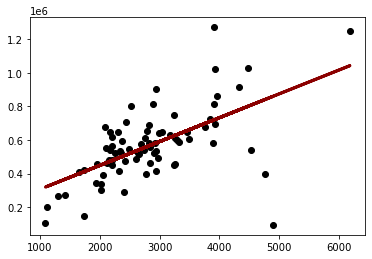
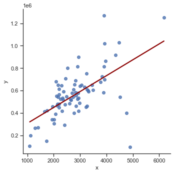

Scikit-learn
Contents
Scikit-learn¶
In this tutorial, we will build a model with the Python scikit-learn module. Additionally, you will learn how to create a data preprocessing pipline.
Data preparation¶
# See notebook "Data Exploration" for details about data preprocessing
from case_duke_data_prep import *
Data preprocessing pipeline¶
# Modules
from sklearn.compose import ColumnTransformer
from sklearn.compose import make_column_selector as selector
from sklearn.pipeline import Pipeline
from sklearn.impute import SimpleImputer
from sklearn import set_config
from sklearn.preprocessing import StandardScaler, OneHotEncoder
# for numeric features
numeric_transformer = Pipeline(steps=[
('imputer', SimpleImputer(strategy='median')),
('scaler', StandardScaler())
])
# for categorical features
categorical_transformer = Pipeline(steps=[
('imputer', SimpleImputer(strategy='constant', fill_value='missing')),
('onehot', OneHotEncoder(handle_unknown='ignore'))
])
# Pipeline
preprocessor = ColumnTransformer(transformers=[
('num', numeric_transformer, selector(dtype_exclude="category")),
('cat', categorical_transformer, selector(dtype_include="category"))
])
Simple regression¶
# Select features for simple regression
features = ['area']
X = df[features]
# Create response
y = df["price"]
# check feature
X.info()
<class 'pandas.core.frame.DataFrame'>
Int64Index: 97 entries, 0 to 97
Data columns (total 1 columns):
# Column Non-Null Count Dtype
--- ------ -------------- -----
0 area 97 non-null int64
dtypes: int64(1)
memory usage: 1.5 KB
# check label
y
0 1520000
1 1030000
2 420000
3 680000
4 428500
...
93 541000
94 473000
95 490000
96 815000
97 674500
Name: price, Length: 97, dtype: int64
# check for missing values
print("Missing values X:",X.isnull().any(axis=1).sum())
print("Missing values Y:",y.isnull().sum())
Missing values X: 0
Missing values Y: 0
Data splitting¶
from sklearn.model_selection import train_test_split
# Train Test Split
# Use random_state to make this notebook's output identical at every run
X_train, X_test, y_train, y_test = train_test_split(X, y, test_size=0.2, random_state=42)
Modeling¶
from sklearn.linear_model import LinearRegression
# Create pipeline with model
lm_pipe = Pipeline(steps=[
('preprocessor', preprocessor),
('lm', LinearRegression())
])
# show pipeline
set_config(display="diagram")
# Fit model
lm_pipe.fit(X_train, y_train)
Pipeline(steps=[('preprocessor',
ColumnTransformer(transformers=[('num',
Pipeline(steps=[('imputer',
SimpleImputer(strategy='median')),
('scaler',
StandardScaler())]),
),
('cat',
Pipeline(steps=[('imputer',
SimpleImputer(fill_value='missing',
strategy='constant')),
('onehot',
OneHotEncoder(handle_unknown='ignore'))]),
)])),
('lm', LinearRegression())]) ColumnTransformer(transformers=[('num',
Pipeline(steps=[('imputer',
SimpleImputer(strategy='median')),
('scaler', StandardScaler())]),
),
('cat',
Pipeline(steps=[('imputer',
SimpleImputer(fill_value='missing',
strategy='constant')),
('onehot',
OneHotEncoder(handle_unknown='ignore'))]),
)]) SimpleImputer(strategy='median')
StandardScaler()
SimpleImputer(fill_value='missing', strategy='constant')
OneHotEncoder(handle_unknown='ignore')
LinearRegression()
# Obtain model coefficients
lm_pipe.named_steps['lm'].coef_
array([128046.72300033])
Evaluation with training data¶
There are various options to evaluate a model in scikit-learn. Review this overview about metrics and scoring: quantifying the quality of predictions.
X_train.head()
| area | |
|---|---|
| 49 | 2902 |
| 71 | 2165 |
| 69 | 1094 |
| 15 | 2750 |
| 39 | 2334 |
y_pred = lm_pipe.predict(X_train)
y_pred
array([ 576492.77646789, 471912.55194036, 319937.7616161 ,
554923.99203345, 495893.63463392, 493481.33637481,
473047.75112112, 626583.44031894, 518313.81845394,
477588.54784417, 718676.4738581 , 568262.58240738,
450627.56730111, 477304.74804898, 441404.07395743,
576067.07677511, 538889.30360521, 1041356.84098918,
623603.54246944, 502137.2301281 , 632968.93571071,
567836.8827146 , 410753.69607691, 439275.57549351,
507245.62644152, 721514.47181 , 659504.21656098,
323627.15895357, 716547.97539418, 566275.98384105,
461411.95951833, 580891.67329334, 466520.35583175,
721514.47181 , 463966.15767504, 719385.97334608,
625873.94083096, 477304.74804898, 540875.90217154,
546835.69787053, 699094.28798999, 498731.63258582,
511786.42316456, 450769.46719871, 508806.52531507,
779835.32972156, 400395.00355247, 457580.66228327,
586425.76929955, 484825.44262151, 581459.27288372,
579898.37401017, 583162.07165486, 534916.10647255,
557903.88988295, 349169.14052067, 636232.6333554 ,
476879.04835619, 859157.37247717, 627860.53939729,
469784.05347644, 523138.41497217, 799701.31538486,
726906.66791862, 491069.03811569, 412314.59495046,
560032.38834687, 655672.91932592, 588979.96745626,
806086.81077664, 841419.8852778 , 365629.52864169,
565850.28414827, 597068.26161917, 614380.04912576,
553504.9930575 , 708885.38092405])
from sklearn.metrics import r2_score
r2_score(y_train, y_pred)
0.35694914972541525
from sklearn.metrics import mean_squared_error
mean_squared_error(y_train, y_pred)
29537647395.092514
# RMSE
mean_squared_error(y_train, y_pred, squared=False)
171865.20123367765
%matplotlib inline
import matplotlib.pyplot as plt
# Plot with matplotlib
plt.scatter(X_train, y_train, color='black')
plt.plot(X_train, y_pred, color='darkred', linewidth=3);

import seaborn as sns
sns.set_theme(style="ticks")
# Plot with Seaborn
# We first need to create a DataFrame
df_train = pd.DataFrame({'x': X_train['area'], 'y':y_train})
sns.lmplot(x='x', y='y', data=df_train, line_kws={'color': 'darkred'}, ci=False);

import plotly.io as pio
import plotly.offline as py
import plotly.express as px
# Plot with Plotly Express
px.scatter(x=X_train['area'], y=y_train, opacity=0.65,
trendline='ols', trendline_color_override='darkred')
sns.residplot(x=y_pred, y=y_train, scatter_kws={"s": 80});

Evaluation with test data¶
y_pred = lm_pipe.predict(X_test)
print('MSE:', mean_squared_error(y_test, y_pred))
print('RMSE:', mean_squared_error(y_test, y_pred, squared=False))
MSE: 23209825917.07576
RMSE: 152347.7138557575
# Plot with Plotly Express
px.scatter(x=X_test['area'], y=y_test, opacity=0.65,
trendline='ols', trendline_color_override='darkred')
Model generalization on unseen data (see plotly documentation)
import numpy as np
import plotly.graph_objects as go
x_range = pd.DataFrame({ 'area': np.linspace(X_train['area'].min(), X_train['area'].max(), 100)})
y_range = lm_pipe.predict(x_range)
go.Figure([
go.Scatter(x=X_train.squeeze(), y=y_train, name='train', mode='markers'),
go.Scatter(x=X_test.squeeze(), y=y_test, name='test', mode='markers'),
go.Scatter(x=x_range.area, y=y_range, name='prediction')
])
Multiple regression¶
# Select features for multiple regression
features= [
'bed',
'bath',
'area',
'year_built',
'cooling',
'lot'
]
X = df[features]
X.info()
print("Missing values:",X.isnull().any(axis = 1).sum())
# Create response
y = df["price"]
<class 'pandas.core.frame.DataFrame'>
Int64Index: 97 entries, 0 to 97
Data columns (total 6 columns):
# Column Non-Null Count Dtype
--- ------ -------------- -----
0 bed 97 non-null int64
1 bath 97 non-null float64
2 area 97 non-null int64
3 year_built 97 non-null int64
4 cooling 97 non-null category
5 lot 97 non-null float64
dtypes: category(1), float64(2), int64(3)
memory usage: 4.8 KB
Missing values: 0
# Data splitting
X_train, X_test, y_train, y_test = train_test_split(X, y, test_size=0.2, random_state=42)
# Create pipeline with model
lm_pipe = Pipeline(steps=[
('preprocessor', preprocessor),
('lm', LinearRegression())
])
# show pipeline
set_config(display="diagram")
# Fit model
lm_pipe.fit(X_train, y_train)
Pipeline(steps=[('preprocessor',
ColumnTransformer(transformers=[('num',
Pipeline(steps=[('imputer',
SimpleImputer(strategy='median')),
('scaler',
StandardScaler())]),
),
('cat',
Pipeline(steps=[('imputer',
SimpleImputer(fill_value='missing',
strategy='constant')),
('onehot',
OneHotEncoder(handle_unknown='ignore'))]),
)])),
('lm', LinearRegression())]) ColumnTransformer(transformers=[('num',
Pipeline(steps=[('imputer',
SimpleImputer(strategy='median')),
('scaler', StandardScaler())]),
),
('cat',
Pipeline(steps=[('imputer',
SimpleImputer(fill_value='missing',
strategy='constant')),
('onehot',
OneHotEncoder(handle_unknown='ignore'))]),
)]) SimpleImputer(strategy='median')
StandardScaler()
SimpleImputer(fill_value='missing', strategy='constant')
OneHotEncoder(handle_unknown='ignore')
LinearRegression()
# Obtain model coefficients
lm_pipe.named_steps['lm'].coef_
array([ 37501.22436002, 50280.7007969 , 30312.97805437, 27994.3520344 ,
79024.39994917, 23467.73502737, -23467.73502737])
Evaluation with test data:
y_pred = lm_pipe.predict(X_test)
r2_score(y_test, y_pred)
0.4825836731448807